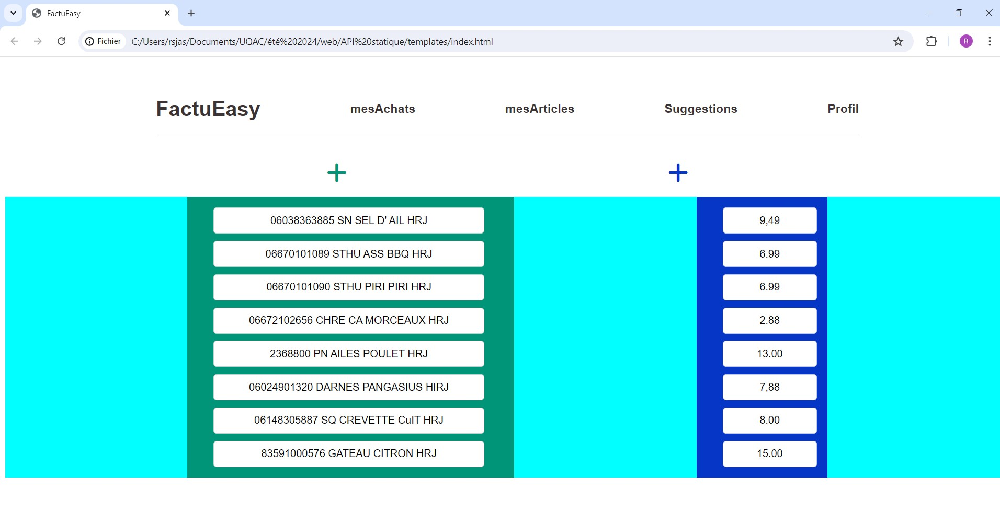
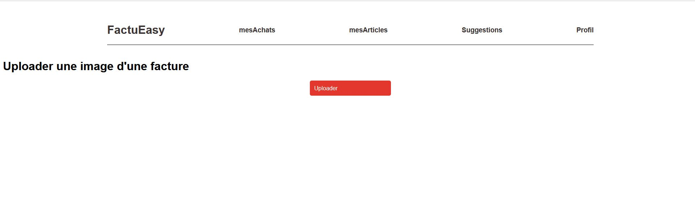
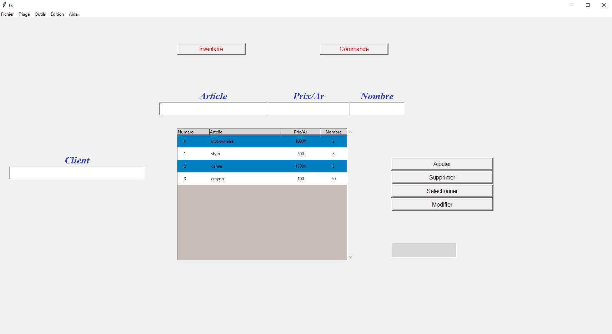
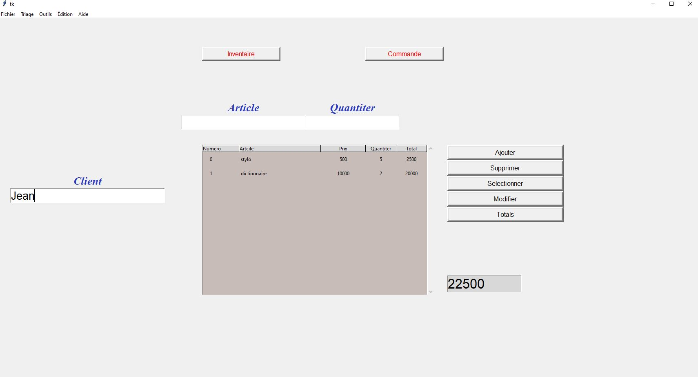

API pour la gestion des commandes en ligne
Difficulté : 7/10
L'API "Achat en ligne" est une API RESTful développée en C# avec le framework .NET. Elle permet de simuler un système complet d'achat en ligne, incluant la consultation des produits, l'ajout d'articles au panier, et le processus de paiement.
L'API gère les routes via les contrôleurs, interagit avec la base de données à travers des modèles en utilisant Entity Framework, et assure une gestion efficace des erreurs. Grâce à l'injection de dépendances, elle garantit une architecture modulaire et maintenable.
Elle intègre également la gestion des middlewares pour des traitements transversaux comme la gestion des logs, le support du CORS (Cross-Origin Resource Sharing), et l'authentification basée sur JWT (JSON Web Token) pour sécuriser les échanges. De plus, l'API est entièrement compatible avec le format JSON, facilitant l'intégration avec d'autres systèmes.


Technologies : C#, .NET, Entity Framework, PostgreSQL
FactuEasy
Difficulté : 9/10
Ce projet est ma réalisation la plus ambitieuse à ce jour. Il s'agit d'une application web où l'utilisateur peut téléverser une facture, qui est ensuite transformée en texte à l'aide d'un système de reconnaissance de caractères (OCR).
Seules les parties pertinentes de la facture, comme les articles et les prix, sont extraites de manière automatisée. Ce projet combine le développement web (frontend et backend) avec des concepts avancés d'intelligence artificielle, tels que les réseaux de neurones pour la reconnaissance d'image et l'apprentissage par transfert pour améliorer l'efficacité de l'extraction.
Des techniques de régularisation ont été employées pour prévenir le surapprentissage, et une attention particulière a été portée sur la gestion du biais et de la variance pour des meilleures prédictions.


Technologies : Python, Docker, PostgreSQL, Flask, Peewee, TensorFlow, Kubernetes
Task motivation
Difficulté:6/10
Ceci est ma toute première application mobile, un projet qui m'a permis de me familiariser avec le développement Android.
Il s'agit d'une application de to-do list, enrichie d'une fonctionnalité unique où chaque tâche accomplie attribue des points de compétences, créant ainsi une dimension ludique et motivante pour l'utilisateur.
L'application est développée en Java en utilisant l'environnement Android Studio et son SDK, avec une gestion optimisée des tâches et des notifications pour rappeler les tâches à accomplir.
J'ai également implémenté une interface utilisateur intuitive et réactive, en suivant les bonnes pratiques de conception mobile pour garantir une expérience fluide et agréable.


Technologie: Java, XML, sqlite
Sales software
Difficulté:5/10
Ce projet est mon tout premier.
Il est développé en Python et utilise la bibliothèque graphique Tkinter.
L'objectif de ce projet est de créer un logiciel de vente capable de gérer la facturation et de sauvegarder les produits dans une base de données. À l'époque, ma mère tenait une épicerie et utilisait Excel pour la gestion de ses factures et de son inventaire. J'ai donc voulu lui simplifier la vie en créant ce logiciel.


Technologie: Python, sqlite
Gestion des déchets
Difficulté:7/10
Ce projet simule la gestion des déchets d’un établissement, depuis la collecte et le tri jusqu’à la transformation.
Le code est entièrement écrit en suivant le paradigme orienté objet.


Technologie: C++
Cheval de Troie
Difficulté:7/10
Ce programme est une simulation du cheval de Troie.
Lorsqu'il est exécuté par la cible, le programme se connecte directement à l'ordinateur hôte, permettant à ce dernier d'exécuter des commandes batch sur l'ordinateur cible et de recevoir les réponses.
Il est important de noter que ce programme est développé uniquement pour comprendre le fonctionnement d'un cheval de Troie et des réseaux, et non dans le but de nuire à quelqu'un.
Il est écrit en C++ et utilise des sockets pour la communication.

Technologie: C++